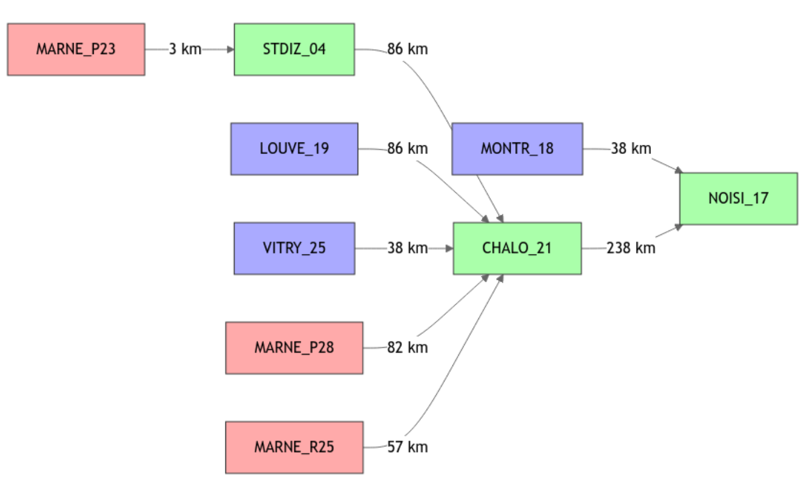
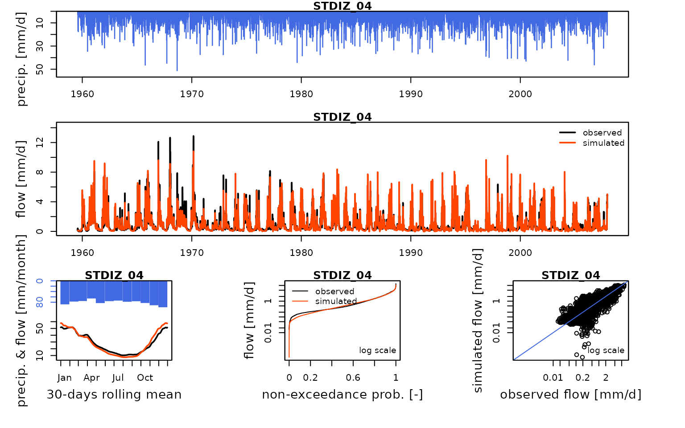
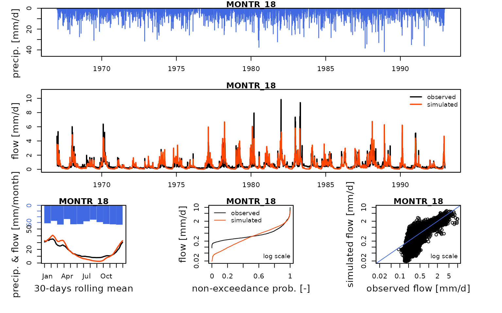
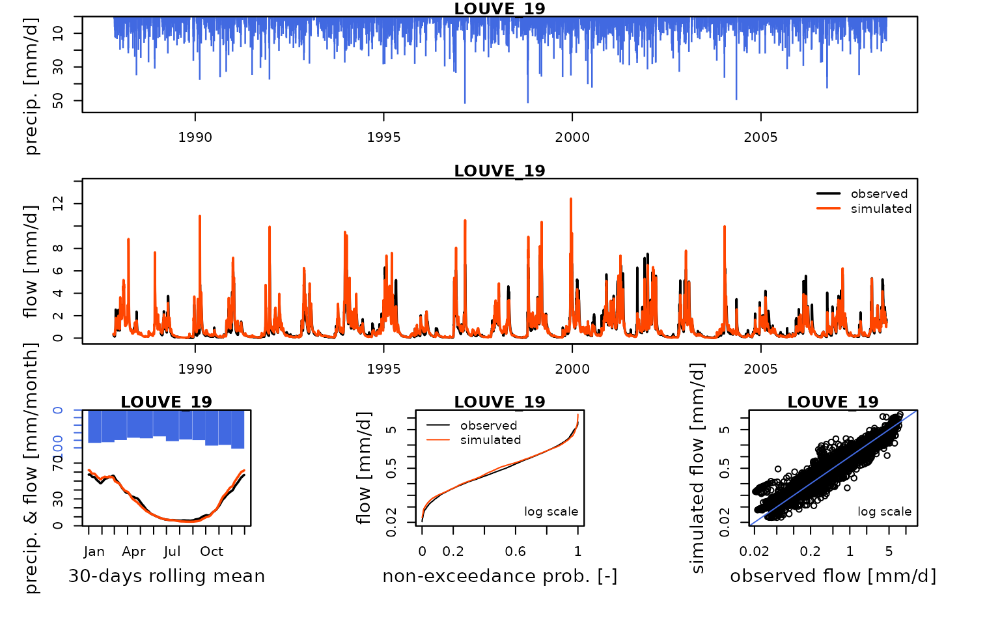
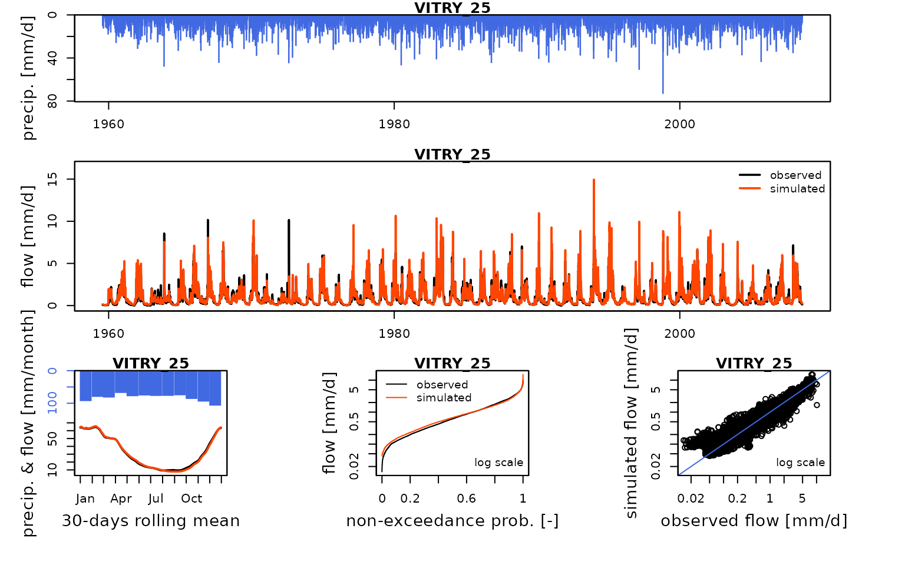
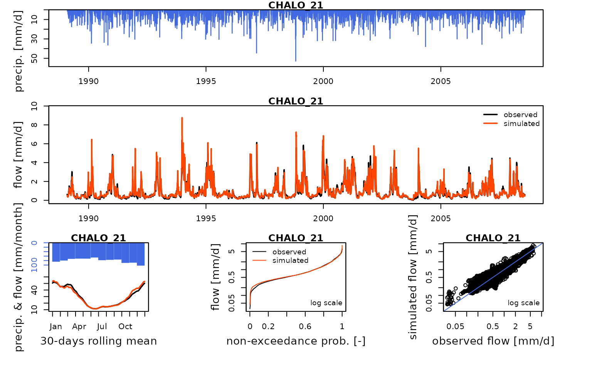
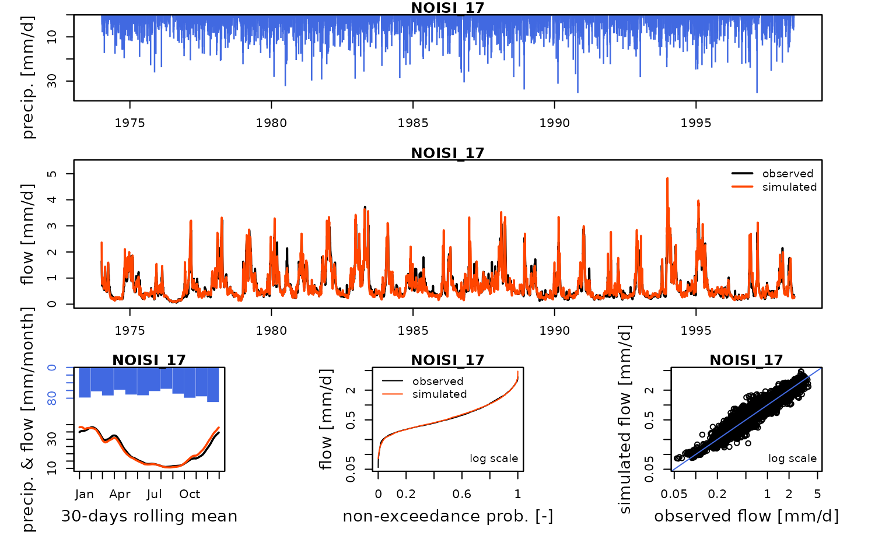

vignettes/seinebasin/V05_Open-loop_influenced_flow_calibration.Rmd
V05_Open-loop_influenced_flow_calibration.Rmd
library(airGRiwrm)
#> Loading required package: airGR
#>
#> Attaching package: 'airGRiwrm'
#> The following objects are masked from 'package:airGR':
#>
#> Calibration, CreateCalibOptions, CreateInputsCrit,
#> CreateInputsModel, CreateRunOptions, RunModelThis vignette aims at showing an example of calibrating the SD model on influenced flows while injecting observed uptakes and releases of the lakes. It will use influenced observation flows directly measured at gauging stations and flows recorded at reservoir inlets and outlets.
Loading naturalized data and influenced flows configuration:
load("_cache/V04.RData")We remove extra items from a complete configuration to keep only the Marne system:
selectedNodes <- c("MARNE_P23", "STDIZ_04", "LOUVE_19", "VITRY_25", "MARNE_P28", "MARNE_R25", "CHALO_21", "MONTR_18", "NOISI_17")
griwrm3 <- griwrm2[griwrm2$id %in% selectedNodes,]
griwrm3[griwrm3$id == "NOISI_17", c("down", "length")] = NA # Downstream station instead of PARIS_05
plot(griwrm3)
We can now generate the new GRiwrmInputsModel
object:
library(seinebasin)
data(QOBS)
iEnd <- which(DatesR == as.POSIXct("2008-07-31", tz = "UTC"))
data(Qreservoirs)
QresMarne <- Qreservoirs[1:iEnd, grep("MARNE", colnames(Qreservoirs))]
id_GR_nodes <- griwrm3$id[!is.na(griwrm3$model)]
InputsModel3 <- CreateInputsModel(griwrm3,
DatesR[1:iEnd],
Precip[1:iEnd, id_GR_nodes],
PotEvap[1:iEnd, id_GR_nodes],
QresMarne)
#> CreateInputsModel.GRiwrm: Processing sub-basin STDIZ_04...
#> CreateInputsModel.GRiwrm: Processing sub-basin MONTR_18...
#> CreateInputsModel.GRiwrm: Processing sub-basin LOUVE_19...
#> CreateInputsModel.GRiwrm: Processing sub-basin VITRY_25...
#> CreateInputsModel.GRiwrm: Processing sub-basin CHALO_21...
#> CreateInputsModel.GRiwrm: Processing sub-basin NOISI_17...We first define the run period:
IndPeriod_Run <- seq.int(
which(DatesR == (DatesR[1] + 365 * 24 * 60 * 60)), # Set aside warm-up period
iEnd # Until the end of the time series
)We define the (optional but recommended) warm up period as a one-year period before the run period:
IndPeriod_WarmUp <- seq.int(1, IndPeriod_Run[1] - 1)
RunOptions <- CreateRunOptions(
InputsModel3,
IndPeriod_WarmUp = IndPeriod_WarmUp,
IndPeriod_Run = IndPeriod_Run
)We define the objective function for the calibration:
InputsCrit <- CreateInputsCrit(
InputsModel = InputsModel3,
FUN_CRIT = ErrorCrit_KGE2,
RunOptions = RunOptions, Obs = Qobs[IndPeriod_Run,]
)
CalibOptions <- CreateCalibOptions(InputsModel3)
str(CalibOptions)
#> List of 6
#> $ STDIZ_04:List of 4
#> ..$ FixedParam : logi [1:5] NA NA NA NA NA
#> ..$ SearchRanges : num [1:2, 1:5] 1.00e-02 2.00e+01 4.59e-05 2.18e+04 -1.09e+04 ...
#> ..$ FUN_TRANSFO :function (ParamIn, Direction)
#> ..$ StartParamDistrib: num [1:3, 1:5] 1.25 2.5 5 169.02 247.15 ...
#> ..- attr(*, "class")= chr [1:5] "CalibOptions" "daily" "GR" "SD" ...
#> $ MONTR_18:List of 4
#> ..$ FixedParam : logi [1:4] NA NA NA NA
#> ..$ SearchRanges : num [1:2, 1:4] 4.59e-05 2.18e+04 -1.09e+04 1.09e+04 4.59e-05 ...
#> ..$ FUN_TRANSFO :function (ParamIn, Direction)
#> ..$ StartParamDistrib: num [1:3, 1:4] 169.017 247.151 432.681 -2.376 -0.649 ...
#> ..- attr(*, "class")= chr [1:4] "CalibOptions" "daily" "GR" "HBAN"
#> $ LOUVE_19:List of 4
#> ..$ FixedParam : logi [1:4] NA NA NA NA
#> ..$ SearchRanges : num [1:2, 1:4] 4.59e-05 2.18e+04 -1.09e+04 1.09e+04 4.59e-05 ...
#> ..$ FUN_TRANSFO :function (ParamIn, Direction)
#> ..$ StartParamDistrib: num [1:3, 1:4] 169.017 247.151 432.681 -2.376 -0.649 ...
#> ..- attr(*, "class")= chr [1:4] "CalibOptions" "daily" "GR" "HBAN"
#> $ VITRY_25:List of 4
#> ..$ FixedParam : logi [1:4] NA NA NA NA
#> ..$ SearchRanges : num [1:2, 1:4] 4.59e-05 2.18e+04 -1.09e+04 1.09e+04 4.59e-05 ...
#> ..$ FUN_TRANSFO :function (ParamIn, Direction)
#> ..$ StartParamDistrib: num [1:3, 1:4] 169.017 247.151 432.681 -2.376 -0.649 ...
#> ..- attr(*, "class")= chr [1:4] "CalibOptions" "daily" "GR" "HBAN"
#> $ CHALO_21:List of 4
#> ..$ FixedParam : logi [1:5] NA NA NA NA NA
#> ..$ SearchRanges : num [1:2, 1:5] 1.00e-02 2.00e+01 4.59e-05 2.18e+04 -1.09e+04 ...
#> ..$ FUN_TRANSFO :function (ParamIn, Direction)
#> ..$ StartParamDistrib: num [1:3, 1:5] 1.25 2.5 5 169.02 247.15 ...
#> ..- attr(*, "class")= chr [1:5] "CalibOptions" "daily" "GR" "SD" ...
#> $ NOISI_17:List of 4
#> ..$ FixedParam : logi [1:5] NA NA NA NA NA
#> ..$ SearchRanges : num [1:2, 1:5] 1.00e-02 2.00e+01 4.59e-05 2.18e+04 -1.09e+04 ...
#> ..$ FUN_TRANSFO :function (ParamIn, Direction)
#> ..$ StartParamDistrib: num [1:3, 1:5] 1.25 2.5 5 169.02 247.15 ...
#> ..- attr(*, "class")= chr [1:5] "CalibOptions" "daily" "GR" "SD" ...
#> - attr(*, "class")= chr [1:2] "GRiwrmCalibOptions" "list"The optimization (i.e. calibration) of parameters can now be performed:
OutputsCalib <- Calibration(InputsModel3, RunOptions, InputsCrit, CalibOptions)
#> Calibration.GRiwrmInputsModel: Processing sub-basin 'STDIZ_04'...
#> Grid-Screening in progress (0% 20% 40% 60% 80% 100%)
#> Screening completed (243 runs)
#> Param = 5.000, 169.017, -0.020, 83.096, 2.384
#> Crit. KGE2[Q] = 0.8619
#> Steepest-descent local search in progress
#> Calibration completed (150 iterations, 1748 runs)
#> Param = 19.990, 166.372, -0.233, 69.230, 3.727
#> Crit. KGE2[Q] = 0.9179
#> Calibration.GRiwrmInputsModel: Processing sub-basin 'MONTR_18'...
#> Grid-Screening in progress (0% 20% 40% 60% 80% 100%)
#> Screening completed (81 runs)
#> Param = 247.151, -0.649, 42.098, 2.384
#> Crit. KGE2[Q] = 0.8117
#> Steepest-descent local search in progress
#> Calibration completed (32 iterations, 331 runs)
#> Param = 198.455, -1.070, 77.183, 2.473
#> Crit. KGE2[Q] = 0.8311
#> Calibration.GRiwrmInputsModel: Processing sub-basin 'LOUVE_19'...
#> Grid-Screening in progress (0% 20% 40% 60% 80% 100%)
#> Screening completed (81 runs)
#> Param = 247.151, -2.376, 83.096, 2.384
#> Crit. KGE2[Q] = 0.9123
#> Steepest-descent local search in progress
#> Calibration completed (25 iterations, 270 runs)
#> Param = 174.509, -3.018, 96.535, 2.344
#> Crit. KGE2[Q] = 0.9306
#> Calibration.GRiwrmInputsModel: Processing sub-basin 'VITRY_25'...
#> Grid-Screening in progress (0% 20% 40% 60% 80% 100%)
#> Screening completed (81 runs)
#> Param = 432.681, -0.649, 83.096, 2.384
#> Crit. KGE2[Q] = 0.8712
#> Steepest-descent local search in progress
#> Calibration completed (64 iterations, 612 runs)
#> Param = 299.290, -1.228, 91.986, 5.101
#> Crit. KGE2[Q] = 0.9531
#> Calibration.GRiwrmInputsModel: Processing sub-basin 'CHALO_21'...
#> Grid-Screening in progress (0% 20% 40% 60% 80% 100%)
#> Screening completed (243 runs)
#> Param = 1.250, 432.681, -2.376, 20.697, 1.417
#> Crit. KGE2[Q] = 0.9109
#> Steepest-descent local search in progress
#> Calibration completed (111 iterations, 1383 runs)
#> Param = 0.388, 1195.785, -2.097, 5.011, 3.963
#> Crit. KGE2[Q] = 0.9576
#> Calibration.GRiwrmInputsModel: Processing sub-basin 'NOISI_17'...
#> Grid-Screening in progress (0% 20% 40% 60% 80% 100%)
#> Screening completed (243 runs)
#> Param = 1.250, 432.681, -2.376, 83.096, 1.417
#> Crit. KGE2[Q] = 0.8225
#> Steepest-descent local search in progress
#> Calibration completed (145 iterations, 1765 runs)
#> Param = 0.779, 2361.963, -2.229, 22.784, 2.733
#> Crit. KGE2[Q] = 0.9506Now that the model is calibrated, we can run it with the optimized parameter values:
Param5 <- extractParam(OutputsCalib)
OutputsModels3 <- RunModel(
InputsModel3,
RunOptions = RunOptions,
Param = Param5
)
#> RunModel.GRiwrmInputsModel: Processing sub-basin STDIZ_04...
#> Warning in RunModel_Lag(InputsModel, RunOptions, Param[1], OutputsModel): 135
#> time steps with negative flow, set to zero.
#> RunModel.GRiwrmInputsModel: Processing sub-basin MONTR_18...
#> RunModel.GRiwrmInputsModel: Processing sub-basin LOUVE_19...
#> RunModel.GRiwrmInputsModel: Processing sub-basin VITRY_25...
#> RunModel.GRiwrmInputsModel: Processing sub-basin CHALO_21...
#> RunModel.GRiwrmInputsModel: Processing sub-basin NOISI_17...We can compare these simulated flows with influenced discharge measurements:
htmltools::tagList(lapply(
griwrm3$id[!is.na(griwrm3$model)],
function(x) {
Q3 <- Qobs[RunOptions[[1]]$IndPeriod_Run, x]
iQ3 <- which(!is.na(Q3))
IndPeriod_Obs <- iQ3[1]:tail(iQ3, 1)
OutputsModels <- ReduceOutputsModel(OutputsModels3[[x]], IndPeriod_Obs)
plot(OutputsModels, Qobs = Q3[IndPeriod_Obs], main = x)
}
))
#> Warning in plot.OutputsModel(OutputsModels, Qobs = Q3[IndPeriod_Obs], main =
#> x): zeroes detected in 'Qsim': some plots in the log space will not be created
#> using all time-steps
save(Param5, file = "_cache/V05.RData")